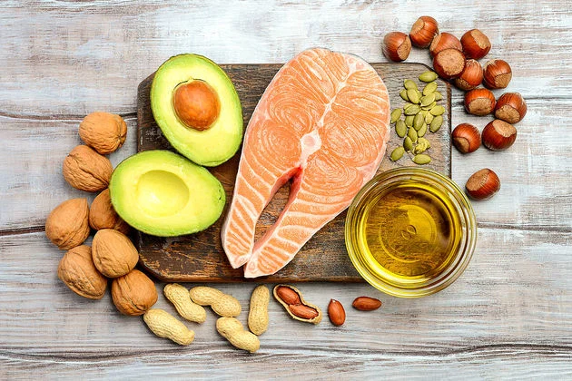

Exemplos de Lipídios



Os lipídios são um grupo de compostos orgânicos essenciais conhecidos pela sua natureza hidrofóbica.
Glicerídeos e Fosfolipídios.
Reserva de energia,Componentes estruturais, Produção de hormônios e Produção de hormônios.
Os lipídios são encontrados tanto em alimentos de origem vegetal
quanto em alimentos de origem animal.
Alimentos que contém lipídios óleos
vegetais;abacate;peixes;nozes;oleaginosas;carnes vermelhas.